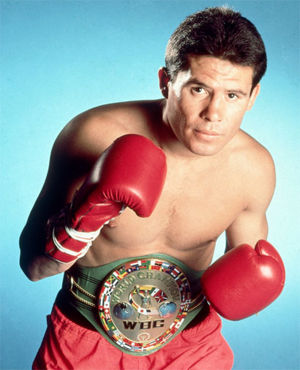

Year Up Bay Area is a one year, intensive training program that provides low-income young adults, ages 18-24, with a combination of hands-on skill development, college credits, and corporate internships. Since opening our doors in 2008, we have helped over 500 young adults cross the Opportunity Divide in the San Francisco Bay Area. 88% of our graduates are employed (earning competitive wages) or are attending college within four months of completing the program.


